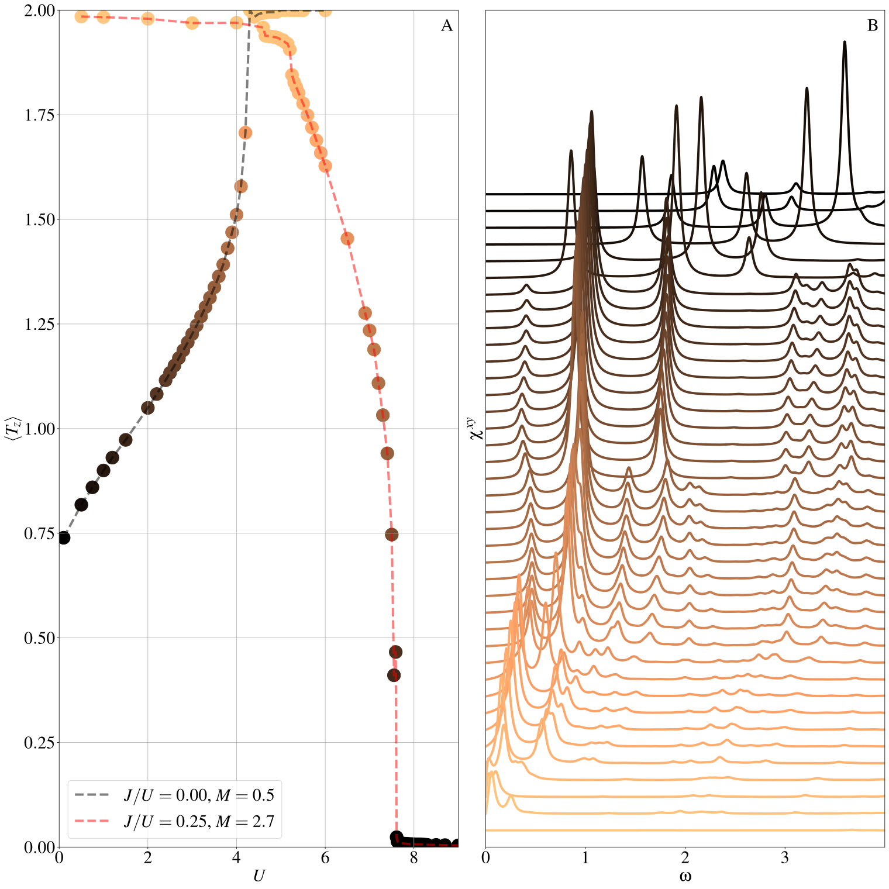

Interacting Bernevig-Hughes-Zhang model
In this section we discuss a thorough example , using the
EDIpack2.0 ED algorithm as a solver for DMFT for ed_mode =
normal. We focus on a paradigmatic multi-orbital model of interacting electrons.
This is a Fermi-Hubbard model describing two-orbital electrons on a square lattice describing an interacting quantum spin Hall insulator (QSHI). The model is an extension of the Bernevig-Hughes-Zhang model supplemented with Hubbard-Kanamori interaction.
We first introduce a suitable basis of Dirac matrices \(\Gamma_{a\alpha}=\sigma_a\otimes \tau_\alpha\), where \(\sigma_a\) and \(\tau_\alpha\) are Pauli matrices, respectively, in the spin and orbital pseudo-spin space.
In terms of these matrices the model Hamiltonian reads \(H=\sum_{k}\psi_{k}^\dagger H(k)\psi_{k} + H_{\rm int}\), where the spinor \(\psi_{k}=[c_{1\uparrow k}, c_{2\uparrow k}, c_{1\downarrow k}, c_{2\downarrow k} ]\) collect the two orbital and two spins second quantization annihilation operators. We have then:
where \(M\) is the mass term, which plays the role of a crystal field splitting among the orbitals. The presence of this term breaks the symmetry in the orbital pseudo-spin channel.
The interaction term describes the density-density part of the Kanamori interaction. We neglect the pair-hopping and spin-flip purely for numerical reasons in this context.
where \(N=\tfrac{1}{2}\psi_i^\dagger \Gamma_{00}\psi_i\) is the total density operator, \(S_z=\tfrac{1}{2}\psi_i^\dagger \Gamma_{30}\psi_i\) is the total spin polarization operator and \(T_z=\tfrac{1}{2}\psi_i^\dagger \Gamma_{03}\psi_i\) is the orbital pseudo-spin polarization operator.
We are now ready to start discussing the solution of this model, starting from the non-interacting regime \(U=J=0\). In this regime the model describes a quantum spin Hall insulating phase for \(M<4t\) and a trivial band insulator for \(M>4t\). As expected a gapless Dirac state is realized at the transition point \(M=4t\).
In presence of interaction we can solve the model using DMFT. We review here the setup of the program using EDIpack2.0.
1program ed_bhz
2 USE EDIPACK2
3 USE SCIFOR
4 USE DMFT_TOOLS
5 USE MPI
6 implicit none
7
8 ...
9
10 call init_MPI()
11 comm = MPI_COMM_WORLD
12 call StartMsg_MPI(comm)
13 rank = get_Rank_MPI(comm)
14 master = get_Master_MPI(comm)
15
16
17 !Parse additional variables && read Input && read H(k)^4x4
18 call parse_cmd_variable(finput,"FINPUT",default='inputED_BHZ.in')
19 call parse_input_variable(Nx,"NX",finput,default=100)
20 call parse_input_variable(nkpath,"NKPATH",finput,default=500)
21 call parse_input_variable(mh,"MH",finput,default=0.d0)
22 call parse_input_variable(lambda,"LAMBDA",finput,default=0.d0)
23 call parse_input_variable(wmixing,"WMIXING",finput,default=0.75d0)
24 !
25 call ed_read_input(trim(finput))
As now clear from reading the quickstart guide, the preamble define
all the required local variables of the program. Here we
also load MPI module and DMFT_TOOLS library to perform some tasks
related to DMFT implementation or tight-binding model setup.
We init the MPI universe using SciFortran MPI interface in
sf_mpi. Finally we read the input file using ed_read_input().
Next we construct the model Hamiltonian \(H(k)\). In the following of the code we will need to construct the renormalized topological Hamiltonian as well, defined as \(H_{top} = \sqrt{Z}[H(k) + \Re\Sigma(w=0)]\sqrt{Z}\), where \(\Sigma\) is the self-energy function obtained from DMFT calculation. To implement the construction of the two using the same function and use a flag to include the required correction.
The corresponding implementation is given by the following two functions, included at the end of the code. The first returns the \(H(k)\) Hamiltonian for any given \(\vec{k}\) point in the BZ zone.
function hk_bhz(kvec,N) result(hk)
integer :: N
real(8),dimension(:) :: kvec
complex(8),dimension(N,N) :: hk
real(8) :: ek,kx,ky
!
if(N/=Nso)stop "hk_bhz error: N != Nspin*Norb == 4"
kx = kvec(1) ; ky=kvec(2)
ek = -1d0*(cos(kx)+cos(ky))
Hk = (Mh+ek)*Gamma5 + lambda*sin(kx)*Gamma1 + lambda*sin(ky)*Gamma2
!
!> Include the self-energy correction, if previously defined
if(fhtop)then
Hk = Hk + dreal(SigmaBHZ)
Hk = matmul(Zbhz,Hk)
endif
end function hk_bhz
the second is used to setup the self-energy correction
sigmabhz to be when building \(H_{top}(k)\):
subroutine set_SigmaBHZ(sigma)
complex(8),dimension(Nso,Nso),optional :: sigma
integer :: ii
!
sigmaBHZ = zero ; Zbhz=eye(Nso); fhtop=.false.
!
if(present(sigma))then
sigmaBHZ=sigma
!
Zbhz=zero
do ii=1,Nso
Zbhz(ii,ii) = 1.d0/abs( 1.d0 + abs(dimag(sigmaBHZ(ii,ii))/pi*beta))
end do
!
fhtop=.true.
!
endif
end subroutine set_SigmaBHZ
We are now ready to initialize the calculation in the main program. The first step to take is to construct the lattice Hamiltonian which, for sake of simplicity, we do using procedures in DMFT_TOOLS:
!> Set the basis vectors square lattice
call TB_set_ei([1d0,0d0],[0d0,1d0]) ! real-space lattice basis vectors
call TB_set_bk([pi2,0d0],[0d0,pi2]) ! k-space lattice basis vectors
!> Set the self-energy correction to zero
call set_SigmaBHZ()
!> Allocate and build the lattice Hamiltonian using model function above.
allocate(Hk(Nso,Nso,Lk)) ;Hk=zero
call TB_build_model(Hk,hk_bhz,Nso,[Nx,Nx])
!> Get the topological invariant Z_2 = 1/2[C_up - C_dw] using discretized Berry flux in the BZ
z2 = get_spinChern(Hk,[Nx,Nx])
if(master)print*,"Z2 = ", z2
Next, to start DMFT calculation we need to set the local Hamiltonian which in the code setup the impurity Hamiltonian, initialize the bath.
!> Get local Hamiltonian summing over k (one can do better)
allocate(Hloc(Nso,Nso))
Hloc = sum(Hk,dim=3)/Lk
where(abs(dreal(Hloc))<1d-6)Hloc=zero
!> Set H_{loc} in EDIpack2
call ed_set_hloc(Hloc)
!> Get bath dimension and allocate user bath to this size
Nb=ed_get_bath_dimension()
allocate(Bath(Nb))
!
!> Initialize the ED solver (bath is guessed or read from file)
call ed_init_solver(bath)
Then we implement the DMFT loop, using the same structure we discussed in the previous section:
Solve the quantum impurity problem for a given user bath \(\vec{b}\).
Retrieve Matsubara self-energy and get the local Green’s function \(G_{loc}=\sum_k [i\omega_n + \mu - H(k) - \Sigma]^{-1}\)
Implement DMFT self-consistency to update Weiss field: \({\cal G}_0 = [G^{-1}_{loc} + \Sigma]^{-1}\)
Update the user bath \(\vec{b}\) using \(\chi^2\) optimization against the obtained updated Weiss field.
Check error and restart.
iloop=0;converged=.false.
do while(.not.converged.AND.iloop<nloop)
iloop=iloop+1
!> Solve the impurity problem, retrieve matsubara self-energy
call ed_solve(bath)
call ed_get_sigma(Smats,axis='mats')
!> Get Gloc (using DMFT_TOOLS)
call get_gloc(Hk,Gmats,Smats,axis='m')
call write_gf(Gmats,"Gloc",axis='mats',iprint=1)
!> Update the Weiss field: (using DMFT_TOOLS). Linear mixing.
call dmft_self_consistency(Gmats,Smats,Weiss)
if(iloop>1)Weiss = wmixing*Weiss + (1.d0-wmixing)*Weiss_
!> Fit the new bath, starting from the current bath + the update Weiss field
call ed_chi2_fitgf(Weiss,bath,ispin=1)
!Check convergence (using DMFT_TOOLS)
converged = check_convergence(Weiss(1,1,:),dmft_error,nsuccess,nloop)
Weiss_=Weiss
enddo
Finally, once converged is achieved and DMFT solution has been obtained we get real-axis Green’s functions and solve the topological Hamiltonian:
!> retrieve real-axis self-energy and build local Green's function
call ed_get_sigma(Sreal,axis='real')
call get_gloc(Hk,Greal,Sreal,axis='r')
call write_gf(Greal,"Gloc",axis='real',iprint=1)
!
!> Set the self-energy correction, build the topological Hamiltonian and get corresponding invariant
call set_SigmaBHZ(Smats(:,:,1))
call TB_build_model(Hk,hk_bhz,Nso,[Nx,Nx]) !this is now Htop = Z.(Hk + ReSigma)
!
z2 = get_spinChern(Hk,[Nx,Nx])
if(master)print*,"Z2* = ", z2
We now show some results obtained using this EDIpack2.0 based program, starting from a simple analysis of the effect of interaction to the QSHI state. For, we consider \(M=1\) and fix the Hund’s exchange to \(J/U=0.25\). As discussed thoroughly in the literature, a finite value of the Hund’s coupling is required to obtain a Mott insulating state when considering (full or density-density) Kanamori interaction.
In panel A, we report the evolution of the spectral function \(-\Im G_{a=1,2}(\omega)\) for increasing interaction strength \(U\). The results show how the QSHI for weak interaction progressively transforms into a strongly correlated non-trivial state for increasing \(U\), displaying smaller topological gap and spectral weight transfert to higher energy. Further increasing the interaction leads to a (high-spin) Mott insulating state, featuring two Hubbard bands separated by a large spectral gap.
This snapshot of the evolution of the topological state is corroborated by the results reported in panel B. There, we show the band structure of the topological Hamiltonian \(H_{top}\), which corresponds to the low-energy quasi-particle dispersion or low-energy poles of the Green’s functions. The hallmark of strong correlation, renormalizing the band dispersion and reducing the topological gap, is clearly visible.

Next, in the panel A of the second figure, we present a brief overview of the evolution of the model solution for \(J/U=0\) and \(J/U=0.25\). The plot shows the behavior of the orbital polarization value \(\langle T_z\rangle = \langle \psi_i^\dagger \Gamma_{03} \psi_i \rangle = \sum_\sigma \langle n_{i2\sigma}\rangle - \langle n_{i1\sigma} \rangle\) in the two cases for a large range of interactions. In both cases we consider a starting regime in the QSHI state. Respectively, we choose \(M=0.5\) for \(J=0\) and \(M=2.7\) for \(J>0\).
In absence of Hund’s coupling the interaction favors states with larger orbital polarization, i.e. trivial band insulator. This state showing a saturated value of \(\langle T_z\rangle\simeq 2\) is reached through a first-order transition at a critical value of the interaction. On the contrary, a finite value of \(J\) tend to favour state with maximal spin project and smaller orbital polarization. As effect the value of \(\langle T_z\rangle\) is slowly reduced to zero, across two consecutive first-order transitions. The first between the trivial insulator and the QSHI, the second entering the high-spin Mott state.
A reasonable question is then whether these strongly correlated states are stable against long-range ordering. To find possible answer this question we analyze the evolution of a excitonic in-plance triplet impurity susceptibility \(\chi^{xy}\). The results reported in panel B shows a clear signature of the softening of this type of excitonic susceptibility which, although different from the correct local susceptibility, gives an indication of the possible instability of the system towards in-plane triplet excitonic ordering.
We will analyze in a successive section the onset of this kind of ordering.
{kind=link}
The program to solve the main model is available here: BHZ Code
Here is a list of bath files corresponding the solutions in figure 1:
Bath \(M=1\), \(J/U=0.25\) and \(U=2\)
hamiltonian.restartBath \(M=1\), \(J/U=0.25\) and \(U=4\)
hamiltonian.restartBath \(M=1\), \(J/U=0.25\) and \(U=8\)
hamiltonian.restart
Here is an example of input file used in the calculations above: InputFile